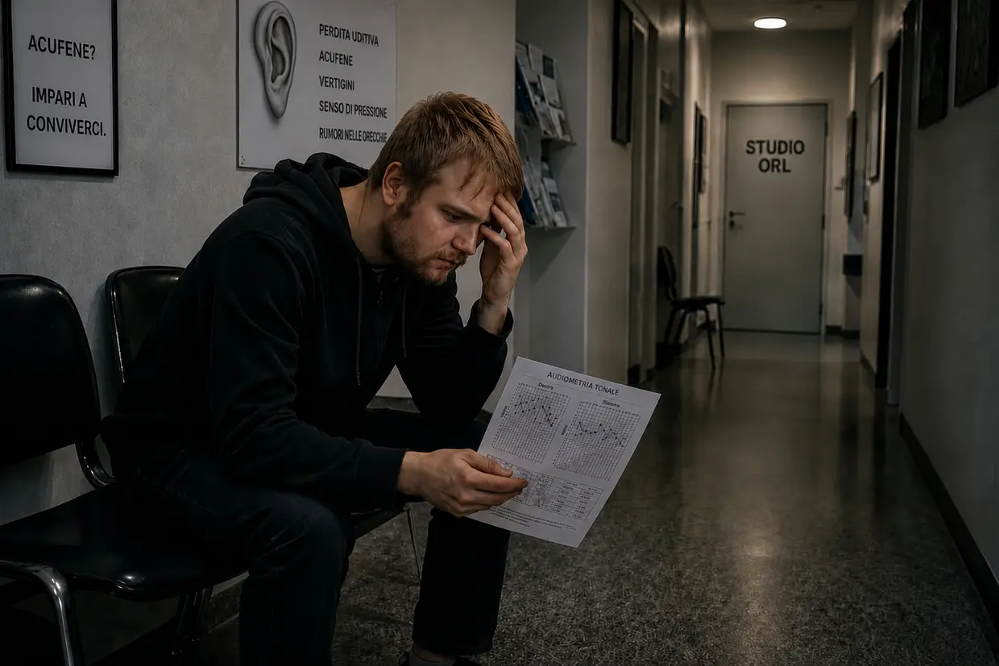
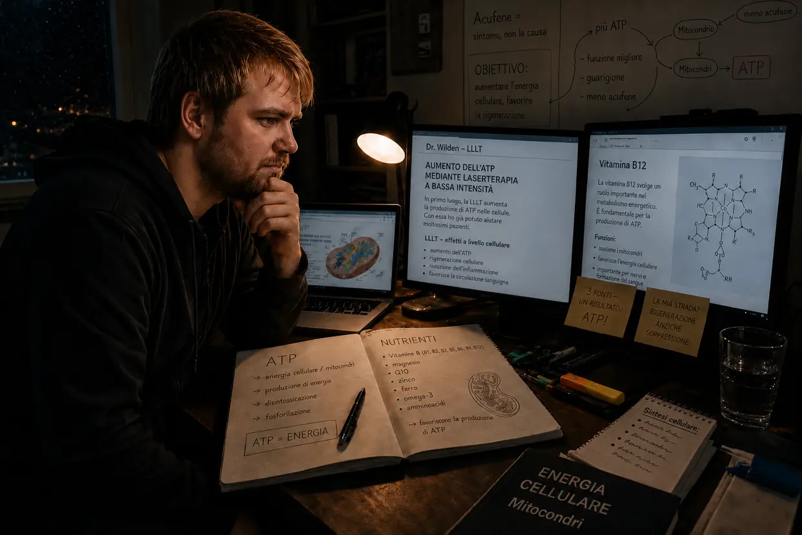

Come sono finito nell'inferno dell'acufene – Parte 1: il viaggio infernale
Ciao, mi chiamo Dustin Müller. Essendone stato colpito in passato — e più di una volta — sentivo un bisogno fortissimo di dare vita a questo sito. Attraverso anni di ricerche, veri protocolli di biohacking e le mie esperienze personali, voglio mostrare ad altre persone colpite come sono arrivato personalmente alla guarigione completa. Ma prima di addentrarci nei meccanismi, devo raccontare come tutto è cominciato per me. E non è stato un caso medico, ma uno schianto frontale.
Cerchi la versione breve? Questa versione integrale entra in ogni dettaglio – gli audiogrammi, le visite dall'otorinolaringoiatra, ogni singolo progresso decisivo. Se la vuoi più compatta, trovi ciò che cerchi nel racconto breve.
Autunno 2011: il corpo invincibile e il carico pregresso
Hai 23 anni, energia da vendere, e pensi che il corpo incassi tutto. Con quella testa lì trattavo anche le mie orecchie. Amavo la musica. Per anni ho ascoltato musica in cuffia a un volume tale che i miei genitori riuscivano a sentirla attraverso la porta chiusa della mia stanza. Il sistema era già «stracotto», e io non lo sapevo.
È cominciato tutto per via di mio cugino. Non ero mai stato davvero in discoteca e lui mi propose di andare con lui all'U60311 di Francoforte. Avevo una brutta sensazione, ma alla fine ho detto di sì. Già scendendo le scale sentivo quanto i bassi fossero fisici, brutali. Da ingenuo, dentro mi sono piazzato in quello che credevo fosse il posto migliore: a circa dieci metri, direttamente davanti alle casse enormi, con l'orecchio sinistro puntato dritto verso la fonte del suono. È stato l'errore che ha fatto cadere il primo domino.
La mattina dopo: la pace ingannevole
Già quando la porta si è chiusa dietro di noi ho sentito una pressione assurda nelle orecchie – a sinistra molto più forte. Tutto suonava ovattato, come sott'acqua. Mio cugino diceva che era normale e che sarebbe passata. Ero ubriaco, quindi sono crollato a letto. La mattina dopo, al primo tentativo di alzarmi, sono ripiombato dritto sul cuscino: il sistema dell'equilibrio era andato, una violenta spinta meccanica verso sinistra.
Avevo una fiducia enorme nella capacità di recupero del mio corpo, quindi l'ho presa quasi sul ridere: ci penserà il tempo. E sembrava proprio così. Il secondo giorno la spinta verso sinistra si è attenuata, la sensazione di pressione è quasi sparita. Ho tirato un sospiro di sollievo: pensavo di essermela cavata.
Giorno 3: il mostro si sveglia
Terzo giorno dopo la discoteca. Mi sono svegliato e all'improvviso ho sentito un suono, come il bip di un frigorifero. Ma che diavolo? Ho accostato la testa al muro. Ho ascoltato vicino alla presa di corrente. Ho controllato il computer, la sveglia. Niente. Poi mi sono messo le mani sulle orecchie.
Oh cazzo. Viene da dentro di me. È nella mia testa.
Sono rimasto lì in piedi per minuti, sotto shock. Che cos'è? Adesso mi resta? Nell'orecchio sinistro un rombo, un fruscio, delle sirene e un fischio forte. Nell'orecchio destro, in quel momento, percepivo già un lieve bip. Nonostante lo shock pensavo: passerà.
L'avvelenamento del software (il termine dei 14 giorni)
Su internet ho trovato le risposte in pochi minuti: ipoacusia improvvisa e danno all'orecchio interno. Perdita uditiva permanente, spesso acufeni. E poi la frase che mi ha gelato il sangue nelle vene: «Va trattato entro 14 giorni, altrimenti diventa cronico e te lo tieni per tutta la vita». Sul forum tinnitus.de ho letto i messaggi di gente che conviveva con quella roba da 5 anni. Cinque anni? Porca puttana. Un difetto fisico si era trasformato in una minaccia psicologica enorme.
Il tradimento in camice bianco (la mia prima visita otorinolaringoiatrica)

Sono andato dall'otorinolaringoiatra che mi seguiva da bambino. Speranza. Adesso arriva la liberazione. Gli ho raccontato della discoteca e dei sintomi. Lui, già un po' scocciato: «Sì, non ci faccia caso. Ascolti un po' di musica, così copre i suoni». Ho insistito: «Ma non si deve intervenire entro 14 giorni? E ha davvero senso esporsi ad altri suoni?». Lui: «Intanto facciamo un'audiometria». Detto questo, è uscito dalla stanza. La mia fiducia ha cominciato a sgretolarsi.
L'orrore del silenzio (l'audiometria)
Solo entrando nella cabina insonorizzata ho capito quanto fosse grave davvero il mio danno all'udito. In quel silenzio assoluto spariva ogni mascheramento naturale: i rumori nel mio orecchio sinistro erano incredibilmente forti. Il test era in tre parti: determinare la frequenza e l'intensità dell'acufene, misurare la capacità uditiva generale e verificare la conduzione ossea sul cranio.
La sentenza
Con il referto in mano, il medico mi ha spiegato che il mio udito era danneggiato in modo permanente e che non c'era niente da fare. Sotto shock, ho chiesto se ci fosse qualche possibilità. Di nuovo un po' spazientito: «Deve imparare a conviverci. Non ci faccia caso, si distragga, si metta le cuffie». Alla mia assurda domanda se potessi continuare ad andare in discoteca: «Sì, non è un problema». Poi mi ha congedato.
Il giuramento e il viaggio di ritorno
La strada verso casa è stata un vero inferno. Un peso enorme addosso. Nella disperazione, per un attimo ho pensato: o me lo tolgo di dosso, o non voglio più vivere. Ma appena arrivato a casa quella tristezza senza fondo si è trasformata di colpo in pura ostinazione. Non posso credere che in tutta la Germania non ci sia un medico che sappia cos'è l'acufene. Ho stretto i pugni:
«O se ne va l'acufene, o me ne vado io. Non permetterò a questa cosa di dominare la mia vita. Devo guardare io stesso cosa si può fare».
Il far west degli approcci

Mi sono messo a studiare da solo e mi sono ritrovato davanti a una valanga di «terapie»:
- Cortisone e ginkgo: rimedi che favoriscono la circolazione e contrastano l'infiammazione – sembrava sensato per far riprendere l'udito.
- Mascella e collo (DCM / cervicale): teorie secondo cui sono le tensioni muscolari a scatenare i rumori. Ma visto che l'acufene me l'ero preso di sicuro con i bassi della discoteca, il mio radar anti-stronzate si è messo a suonare.
- TRT e mascheramento: coprire il suono con altri suoni. In effetti così riuscivo a ridurre l'acufene sul momento, ma appena spegnevo tornava più aggressivo e più forte di prima. (Oggi lo so: ogni nuovo suono costringe al lavoro le cellule ciliate che sono già a secco – consumano l'ultimo ATP, quello che invece servirebbe loro per ripararsi.)
- Integratori alimentari: all'epoca ridevo in faccia a quella gente. Che idioti, pensavo. Spendevano perfino soldi per qualcosa che ritenevo del tutto inutile. Che poi sarei arrivato a spaccare il mio acufene proprio per quella strada – energia cellulare vera, produzione di ATP, i nutrienti giusti – non me lo sarei mai sognato.
La seconda visita otorinolaringoiatrica: il consiglio fatale
La mattina del secondo appuntamento dall'otorinolaringoiatra, l'acufene era improvvisamente diventato molto più forte: anche il lieve bip già presente nell'orecchio destro era ormai nettamente più forte. (Oggi lo so: l'ulteriore esposizione ai suoni su consiglio del medico — con la musica e, di notte, con il rumore bianco — aveva rimesso in ginocchio le mie cellule e intensificato il suono già presente nell'orecchio destro.) Il secondo otorinolaringoiatra era gentile e incoraggiante. Mi ha prescritto il ginkgo e mi ha consigliato di dormire a sufficienza e di fare movimento. Alla domanda sulle cuffie: «Anzi, è persino utile per distrarsi». (Dal punto di vista odierno della biologia cellulare, un consiglio assolutamente fatale.) Alla domanda sulla cronicizzazione dopo tre mesi è arrivato soltanto: «Vediamo… si può anche imparare a compensarlo, cioè a escluderlo del tutto». Eccola di nuovo, quella mezza frase che escludeva ogni vera guarigione.
L'ingannevole ruota del criceto
Così sono passati giorni e settimane. Di giorno la scuola mi distraeva. La sera mi rifugiavo nella spirale ingannevole del mascheramento: musica in cuffia e rumore continuo di cascate d'acqua. Sul momento riuscivo a renderlo sopportabile. Ma dal punto di vista biologico giravo a vuoto: con quel tappeto sonoro tenevo le mie orecchie sfinite sotto stress permanente. Le mie cellule bruciavano l'ultimo ATP per elaborare quel fruscio artificiale, invece di usarlo per la riparazione fisica. Pura modalità sopravvivenza.
Il secondo crollo: iperacusia e il salto mortale delle vertigini
Una mattina è tornata all'improvviso quella fortissima pressione nell'orecchio sinistro. Ho provato a ignorarla e sono andato a scuola. Siccome mi fidavo ancora del consiglio del medico, durante il tragitto ho commesso un errore fatale: la mia canzone preferita alla radio dell'auto, a volume molto alto. Se avessi immaginato quello che mi aspettava ancora durante quella giornata di scuola, avrei fatto immediatamente inversione. I segnali d'allarme c'erano già. Ma non l'ho fatto: le lezioni costavano, quindi ho proseguito. (Quella musica ad alto volume è stata l'ultimissima goccia per le mie cellule ormai completamente esauste.)
Alla prima ora sono arrivate di colpo forti distorsioni uditive e una sensibilità dolorosa ai rumori normali: iperacusia. (Oggi lo so: gli «ammortizzatori» del mio orecchio, le cellule ciliate esterne, avevano bruciato il loro ultimo ATP.) Nelle ore successive la pressione nell'orecchio sinistro è diventata sempre più brutale. Poi è successo: tutto il mio campo visivo ha cominciato a ruotare in verticale, come un mezzo salto mortale dentro la testa. Il mondo si è capovolto. Dopo qualche secondo la vista è tornata normale. Quello che è rimasto: forti vertigini con sensazione di oscillazione, una spinta fortissima verso sinistra, udito ovattato a sinistra. (Il ristagno di ioni nel mio orecchio interno era diventato così enorme da inondare l'organo dell'equilibrio lì accanto.)
In preda al panico ho provato a resistere. Appena è iniziata la ricreazione, me la sono filata. La strada del ritorno è stata una follia: con quelle vertigini estreme dovevo correggere lo sterzo ogni pochi secondi. Ma volevo solo mettermi al sicuro. Quel secondo crollo è stato il punto di svolta definitivo: non posso più stare qui ad aspettare che passi.
Otorino 3 e 4: pillole al posto delle risposte, la bugia del «rumore fantasma» e l'etichetta psicologica
Lo stesso giorno mi sono fatto dare un appuntamento d'urgenza dal terzo otorinolaringoiatra. Audiometria, test dell'olfatto, un test per la «vertigine posizionale» che non ha cambiato niente. (Oggi è chiaro: non erano cristalli staccati, era un idrope endolinfatico – lì non serve a nulla scuotere la testa.) Una collega ha aggiunto la sua diagnosi: «un'altra ipoacusia improvvisa, passerà in 14 giorni» — oppure forse dipendeva dai seni paranasali ostruiti: puro azzardo sui sintomi. Poi la mazzata: «Sa, in tanti cadono in depressione. Se i disturbi restano, le prescrivo volentieri degli antidepressivi». Sono rimasto lì seduto e non credevo alle mie orecchie. Il mio sistema dell'equilibrio era collassato, e la sua soluzione era… psicofarmaci? Mi sono giurato: mai.
Dal quarto otorinolaringoiatra – lo «specialista» – ho consegnato tutta la mia storia. Invece di entrare sul piano cellulare, è arrivata la doccia gelata: «Ha mai sentito parlare di terapia cognitivo-comportamentale? Il suo problema è che si concentra troppo sui suoi problemi di udito, e così mantiene vivo l'acufene». Ho ribattuto: «Ma quel rumore è nato fisicamente, in discoteca!». Non ha reagito minimamente. Alla domanda sul cortisone: «Avrebbe senso solo nei primi 14 giorni. Nel suo caso bisogna partire dal presupposto che sia un rumore fantasma». Alla fine mi ha di nuovo consigliato la TRT con suoni di contrasto, e ha chiuso il discorso quando gli ho spiegato che con il mascheramento il mio acufene diventava soltanto più aggressivo. Il sistema aveva capitolato e aveva scaricato la colpa su di me.
Il fondo assoluto: isolamento e fallimento del sistema
L'incubo ha toccato il culmine alla mia festa di compleanno (un mese e mezzo dopo l'ipoacusia improvvisa). Iperacusia e distorsioni dell'udito mi stavano facendo impazzire. Il mio acufene era così forte da coprire completamente quello che gli altri dicevano. E c'era un fenomeno assurdo in più: le lettere suonavano del tutto diverse da prima – una «S» sembrava una «F», una «T» una «D». Non reggevo più quel bombardamento di stimoli, ho interrotto la mia stessa festa di compleanno e sono scappato a casa. Nei giorni successivi le vertigini sono diventate così estreme che a tratti rischiavo di cadere a terra: un quadro di sintomi che in medicina corrisponde alla «malattia di Ménière». Ero completamente isolato, tagliato fuori. Abbandonato dalla vita e abbandonato dai medici, che mi avevano solo ficcato in testa che stavo dando di matto e che mi servivano degli antidepressivi.
Il primo momento chiave: la prova contro la bugia del «rumore fantasma»
Proprio a tarda ora nel fine settimana mi era venuta un'infiammazione del condotto uditivo dovuta a un'infezione, così mi sono trascinato per forza al pronto soccorso dell'ospedale universitario di Francoforte. L'otorinolaringoiatra ha preso un minuscolo aspiratore per aspirare i condotti uditivi uno dopo l'altro. Ed è stato proprio in quel momento che ho vissuto l'esperienza chiave assoluta: mentre il rumore stridulo infuriava nel mio orecchio sinistro, ho sentito nello stesso istante l'acufene reagire lì dentro a quel frastuono in modo aggressivo, come un'esplosione. Subito dopo, nell'orecchio destro: esattamente la stessa cosa.
Era un test A/B perfetto, fatto sul mio stesso corpo. La mia testa ha fatto a pezzi in un secondo tutto quello che aveva detto lo «specialista»: un rumore fantasma psicologico non reagisce nello stesso istante a uno stimolo sonoro puramente meccanico dentro quel preciso condotto uditivo! Per me quella reazione è stata la prova assoluta: la fonte guasta stava ancora là sotto, dentro il mio orecchio. Sotto il rumore, le cellule urlavano subito aiuto.
Flebo di cortisone e il miracolo delle garze
L'otorinolaringoiatra mi ha chiesto di sfuggita quanto tempo fosse passato dall'ipoacusia improvvisa. Due mesi. Visto che ero ancora dentro il magico termine dei 3 mesi, valeva la pena fare un tentativo con il cortisone. Ho detto subito di sì e sono rimasto ricoverato per la notte. Dal letto d'ospedale ho continuato a cercare e sono finito sul sito personale di un paziente con acufene. Quello che ho letto lì era logico dal punto di vista della biologia cellulare: altro rumore peggiora drasticamente l'acufene. E c'era il link al dottor Wilden e alla sua laserterapia a bassa intensità, che stimola in modo mirato la produzione di ATP nelle cellule. Combaciava al 100% con l'esperienza dell'aspiratore.
Dopo 3 giorni mi hanno dimesso, con grosse garze in tutte e due le orecchie per via dell'infiammazione del condotto uditivo. Già in quei giorni me ne sono accorto: l'acufene si era sensibilmente attenuato! All'inizio pensavo fosse merito del cortisone. Ma quando ho letto sul sito del dottor Wilden quanto sia fondamentale cercare attivamente il silenzio, ho avuto un'illuminazione: per giorni le mie orecchie erano rimaste ben tappate dalle garze! Un otorinolaringoiatra normale non mi avrebbe mai fatto fasciare le orecchie in modo così estremo. Senza volerlo avevo avuto la prova che il silenzio assoluto fa qualcosa.

Il botto, la dinamica e il protocollo del silenzio assoluto
Pochi giorni dopo è arrivata un'altra scoperta importante. Mentre usavo un flaconcino di crema proprio vicino all'orecchio, di colpo c'è stato un botto violento. In una frazione di secondo il mio acufene si è impennato, MA nel giro di pochissimo è tornato al suo livello «normale». Mi è apparso chiarissimo: il mio acufene non era una cosa «fissa», era estremamente dinamico! Peggiorava in tempo reale in risposta al rumore e si attenuava quando cercavo il silenzio con costanza.
Ne ho tratto conseguenze durissime. Da quel momento ho passato attivamente più tempo possibile nel silenzio totale. Musica, film e uscite con gli amici, prima parte della quotidianità, sono diventati rare «ricompense», e comunque rigorosamente senza cuffie, a volume bassissimo, per pochissimo tempo.
Sei mesi di silenzio – e lo stallo al 25%
E DAVVERO l'acufene si è ridotto di mese in mese. A posteriori, dopo circa otto mesi, il volume si era ridotto di circa un quarto. Certo, quel silenzio totale non riuscivo a tenerlo al 100%: bastavano i viaggi in macchina che non potevo evitare (200 km andata e ritorno) e l'acufene tornava al livello alto. In pratica avevo protetto le orecchie per un'intera settimana «per niente».
Poi qualcosa di frustrante: intorno al 20–25% di miglioramento la guarigione si è fermata di colpo. Ho portato l'isolamento all'estremo – evitavo le conversazioni, portavo i tappi tutto il giorno, avevo perfino sbattuto fuori dalla camera l'orologio a muro che ticchettava. Ma non si muoveva più niente. Zero.
Correzione dell'atlante, DCM e cervicale – il vicolo cieco
Allora mi è venuta l'idea di approfondire di nuovo il rapporto tra mascella, colonna cervicale e acufene. Mi sono imbattuto nella DCM (disfunzione craniomandibolare) e dal dentista mi hanno preparato un bite. In un centro ortopedico mi hanno diagnosticato una sindrome cervicale e mi hanno prescritto un allenamento con i pesi (Med X). Ho portato avanti entrambe le cose con disciplina di ferro, e in parallelo ho continuato con il silenzio. Dopo 2 mesi è arrivata la doccia fredda: DCM e disturbi cervicali miglioravano, ma sul fronte dell'acufene non cambiava ASSOLUTAMENTE NULLA.
Ultimo appiglio: la correzione dell'atlante. Ho percorso 200 km per andare da un Heilpraktiker, che ha riposizionato il mio atlante disallineato con un apparecchio specifico e manovre manuali. Anche questo, dopo settimane, non ha portato a nulla. L'unico risultato secondario: l'Heilpraktiker mi ha consigliato bucce di psillio, una miscela di argille minerali e probiotici contro la mia gastrite cronica. E davvero: l'infiammazione della mucosa gastrica che da quasi un anno non voleva saperne di andarsene è scomparsa. Questo mi ha colpito: la medicina convenzionale aveva fallito, l'Heilpraktiker aveva portato a casa il risultato.
Vitamina B12 – il momento chiave più importante (e del tutto casuale)
In quel periodo mio padre soffriva di polineuropatia. Il suo medico di base gli aveva diagnosticato una forte carenza di vitamina B12 e gli aveva prescritto delle iniezioni. Una sera se n'è iniettata una direttamente davanti ai miei occhi e, subito dopo, ha detto: dolori diminuiti, sentiva di nuovo caldo. Una fialetta rossa così piccola produceva un effetto tanto fisico?
Mi sono messo a cercare e ho letto: la B12 è LA vitamina dei nervi. I vegetariani (io lo ero dai 15 anni!) e chi soffre di gastrite cronica (la mia si era risolta da poco) sono particolarmente a rischio. Dal medico di base ho fatto un esame del sangue: il valore era all'estremo inferiore dell'intervallo di normalità, appena sopra la soglia di una vera carenza. Ma il medico mi ha negato le iniezioni: «È ancora nella norma». Sono uscito dall'ambulatorio a testa bassa.
La sera in cui mio padre doveva farsi la puntura di B12 successiva, mi sono fatto coraggio e me ne sono fatto dare una anch'io. Importante: sconsiglio espressamente di rifarlo senza un medico che ti segua. Wow – dopo pochi minuti ho sentito la circolazione migliorare, un calore piacevole, la testa più limpida. Sono andato a letto rilassato.
LA MATTINA DOPO: il miracolo assoluto. Pochi secondi dopo essermi svegliato l'ho sentito subito – l'acufene si era ridotto tantissimo! Da un 25% di miglioramento, di colpo a un buon 40%. Sono rimasto lì sdraiato, incredulo e con le lacrime agli occhi. Nel corso della giornata è tornato a peggiorare, ma non fino al livello di prima. E la mattina dopo di nuovo: 40%.
Sul sito del dottor Wilden avevo letto che il suo laser stimola in modo mirato la produzione di ATP nelle cellule. E la B12 è essenziale proprio per quella produzione di ATP. CLIC! Forse il laser costoso non mi serve affatto: posso aumentare l'ATP con i nutrienti giusti.
Colica biliare e il miracolo della lecitina (il mio modello di allora sulla mielina)
Mentre aspettavo dagli Stati Uniti dei multivitaminici ad alto dosaggio, mi è arrivata addosso la catastrofe successiva: una colica biliare da calcoli. Al pronto soccorso, di notte, la dottoressa aveva da offrirmi solo un intervento: togliere la cistifellea. Ho rifiutato e sono tornato a casa a mio rischio e pericolo.
Di nuovo ricerche su internet: uno che ci era passato raccontava che mesi di lecitina in granuli gli avevano sciolto completamente i calcoli. Me la sono procurata già il giorno dopo, ne ho presi 30 g, e ho sentito davvero la pressione nella parte alta destra della pancia allentarsi. Importante: con i calcoli biliari fatti seguire assolutamente da un medico – questa è la mia esperienza del tutto personale in una situazione acuta, non un consiglio terapeutico per altri.
Ma il vero colpo di scena è arrivato tre giorni dopo: dopo un'iniezione di B12 e la lecitina in granuli è successo di nuovo un miracolo. Il giorno seguente: miglioramento del 60–65% rispetto alla situazione di partenza! Dopo mesi di stallo. Ho approfondito e allora mi sono costruito questo modello: la lecitina è un componente fondamentale dello strato di mielina (l'isolamento dei nervi). Secondo la ricerca, proprio questo isolamento verrebbe danneggiato nell'acufene da rumore: «È come quando si distrugge il rivestimento di plastica di un sottile cavo elettrico». E la B12 sarebbe LA vitamina più importante per rigenerare la guaina mielinica. Accidenti: quindi non mi serve solo ATP, ma anche MATERIALI DA COSTRUZIONE! Oggi considero questo meccanismo in modo più aperto: continuo a ritenere possibile un coinvolgimento del nervo uditivo o della mielina, ma nel mio caso non posso dimostrarlo con certezza. È possibile anche una via indiretta: la colina della lecitina potrebbe fungere da elemento costitutivo per l'acetilcolina e, tramite questa, sostenere il sistema parasimpatico, il sonno profondo e la rigenerazione; oppure la lecitina potrebbe aver accelerato la riparazione cellulare attraverso più vie contemporaneamente. Forse entrambe le cose hanno agito insieme.
La svolta all'80% (il bypass del complesso B)
Con lecitina, multivitaminico e iniezioni di B12 la guarigione andava avanti, ma l'acufene si è fermato intorno al 70% di miglioramento. Il mio sospetto: le altre vitamine del gruppo B non venivano assorbite abbastanza. Mi sono procurato B1 e B2 in fiale, B3, B5 e B8 in compresse ad alto dosaggio. E YES YES YES: settimana dopo settimana un'ulteriore riduzione! Tra il sedicesimo e il diciassettesimo mese dopo la serata in discoteca, dell'acufene era rimasto davvero solo il 20% (cioè 80% di miglioramento). Ma poi di nuovo: stallo.
La guarigione definitiva: il «carpet bombing» delle cellule
Ho cercato come un ossessionato e allora sono arrivato alla conclusione che pensare soltanto alla B12 e alla lecitina fosse enormemente riduttivo. Per la riparazione della mielina che allora ipotizzavo e per altri processi cellulari di ricostruzione, il corpo aveva bisogno di un'intera gamma di altri nutrienti: omega-3 (DHA/EPA), amminoacidi, vitamina C, vitamine liposolubili A/D/E/K, minerali. Mi sono letteralmente imbottito di integratori: iniezioni di vitamine del gruppo B due volte alla settimana, 30 g di lecitina tre–quattro volte alla settimana, ogni giorno amminoacidi in polvere, 3 g di omega-3, vitamina C ad alto dosaggio, la miscela di minerali di Life Extension, magnesio e zinco di NOW Foods, un bicchiere di LaVita al giorno, più le compresse multivitaminiche del dottor Rath. Un «carpet bombing» ortomolecolare.
Il fade-out e la fine dell'incubo (guarigione al 100%)
Con lo stack completo di nutrienti, la dinamica è cambiata in modo decisivo. Secondo il mio modello di allora, il mio corpo aveva adesso l'energia dell'ATP E l'intera gamma di materiali da costruzione. Insieme alla modalità monaco, poteva finalmente lavorare come si deve. Oggi considero il miglioramento dell'approvvigionamento energetico la leva principale; allo stesso tempo, i nutrienti fornivano cofattori e materiali da costruzione importanti e potrebbero aver accelerato ulteriormente il processo. Come già all'inizio: al mattino la batteria cellulare era completamente carica grazie al sonno, la condizione migliore. La sera, a causa della stanchezza della giornata, l'acufene tornava più forte. Ma il silenzio si faceva strada sempre più in profondità nella giornata: all'inizio il suono spariva fino a mezzogiorno. Poi fino al pomeriggio. Gli aumenti serali dell'acufene diventavano sempre meno intensi e più brevi.
E poi è arrivata quella mattina decisiva — non la dimenticherò mai. Nella frazione di secondo in cui mi sono svegliato l'ho subito percepito: nella mia testa c'era qualcosa di diverso. Con il cuore che batteva forte — emozionato come un bambino a Natale — ho spinto i tappi in profondità nelle orecchie. Mi sono messo in ascolto… e non c'era assolutamente NIENTE.
Il dimmer era definitivamente a zero. Mattina, mezzogiorno, sera: più niente. Solo il silenzio naturale, pacifico, che non conoscevo più da quasi due anni. L'acufene non c'era più. Completamente sparito.
Quella sensazione era indescrivibile. Un senso profondo e caldo di sollievo assoluto — e di soddisfazione totale. Avevo vinto: non avevo mollato, avevo trionfato sui medici dell'«impari a conviverci» e, alla fine, non avevo nemmeno avuto bisogno del costoso laser. Il mio corpo si era riparato da solo — il risultato era reale: l'acufene era scomparso completamente. Allora mi spiegavo il meccanismo così: la guaina mielinica si era ricostituita, l'impalcatura di actina delle cellule ciliate era di nuovo in piedi, il falso contatto era stato risolto e il cervello aveva spento l'amplificatore d'emergenza (central gain). Oggi considero l'approvvigionamento energetico la leva principale della rigenerazione cellulare; penso soprattutto alle cellule ciliate, alle loro stereociglia e alle membrane cellulari. Continuo a ritenere possibile un coinvolgimento della mielina o del nervo uditivo, ma nel mio caso non posso dimostrarlo con certezza. Aveva vinto la biologia.
Quello che ancora non immaginavo quella mattina: molti mesi dopo, a causa di un'altra catena di reazioni fatale, il mio corpo sarebbe precipitato nella forma più grave di CFS (sindrome da fatica cronica). Ma quella consapevolezza — che si può guarire da soli persino l'«incurabile» — l'ho portata con me nell'inferno successivo.
La storia non finisce qui. Quello che è arrivato dopo il primo trionfo è stato il vero test rischioso, e la dimostrazione consapevole, folle, che il mio modello biologico funziona davvero.